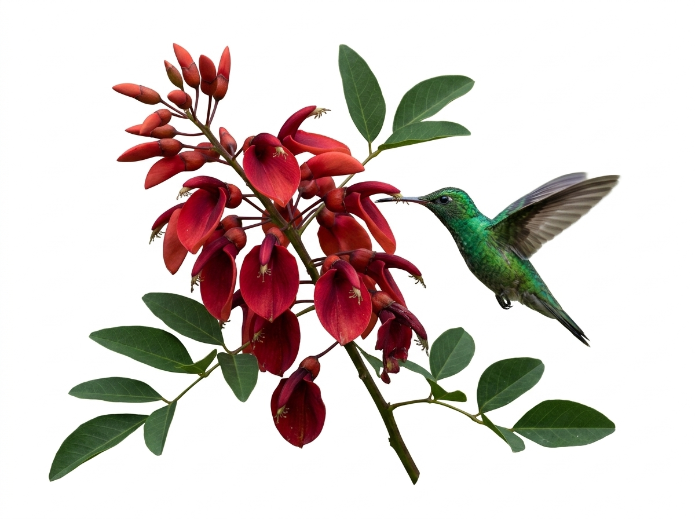
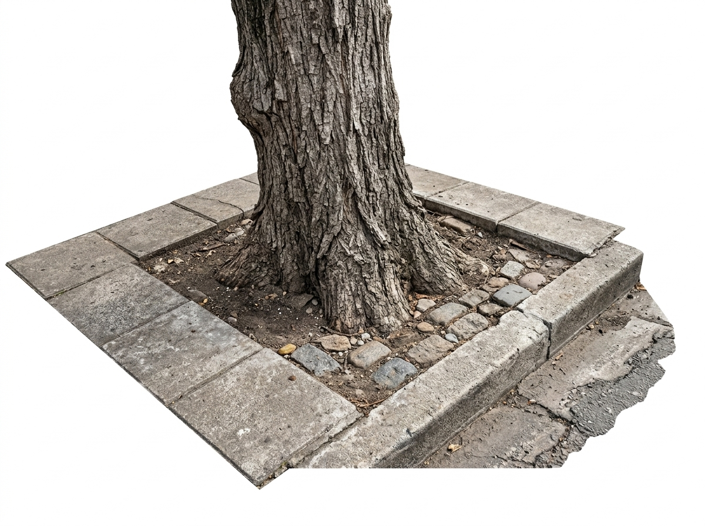

Capítulo 1 · Introducción
Qué entendemos por especie nativa
Una especie nativa o autóctona es la que se originó y evolucionó en una región determinada, sin intervención humana. Se opone a las especies exóticas, introducidas desde otras regiones del mundo.
Que una especie sea nativa de la Argentina no significa que sea nativa de cualquier lugar del país. Un árbol propio de la selva misionera puede resultar tan ajeno a la Patagonia como una especie traída de otro continente. Por eso, en este informe hablamos de especies nativas de cada región.
También conviene distinguir entre especies exóticas y especies invasoras: estas últimas, además de haber sido introducidas, se reproducen sin control y desplazan a la flora local. No toda especie exótica es invasora, pero algunas de las más plantadas en las ciudades sí lo son.
Por qué importan
- Están adaptadas al clima y al suelo de su región, por lo que requieren menos riego y cuidados.
- Sostienen a la fauna local: aves, insectos polinizadores y mariposas.
- Forman parte de la identidad cultural y del paisaje de cada lugar.

Atracción específica de picaflores y mariposas; floración estival ornitófila con flores carmín ricas en néctar.

Absorción e infiltración de excedentes pluviales; desarrollo radicular adaptado a suelos inundables sin fisurar baldosas.
En el contexto urbano, estas ventajas se traducen en menor mantenimiento y en espacios públicos que funcionan como pequeños corredores biológicos dentro de la ciudad.